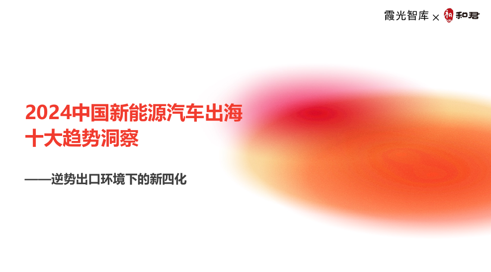
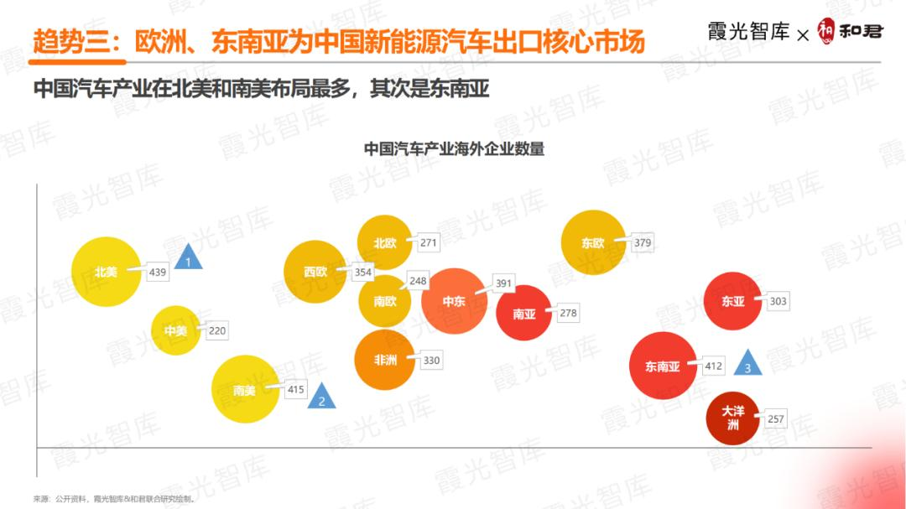
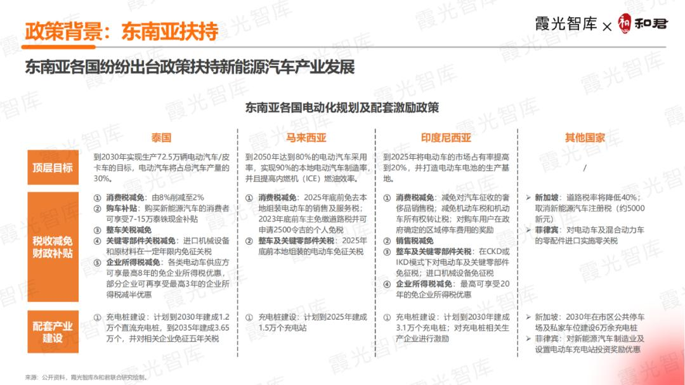

2024中国新能源汽车出海十大趋势洞察
2023年，中国新能源汽车出海驶入快车道，各级政府纷纷出台系列政策，进一步鼓励并推动新能源汽车走向海外。即便面对欧美多轮施压、全球经济下行以及地缘政治风险等多重复杂环境的影响及不利因素的挑战，我国新能源汽车出口仍实现了较高的增长，一方面得益于我国新能源汽车在产品、技术以及供应链等方面的优势，另一方面也受益于东南亚等新兴市场不断加大新能源汽车产业扶持力度，为我国新能源汽车产业出海带来新的时间窗口，进而实现「逆势增长」。

1. 关于本报告
基于对中国新能源汽车产业出海的研究积累及深度理解，霞光智库联合和君咨询共同发布《2024中国新能源汽车出海十大趋势洞察——逆势出口环境下的「新四化」》，分别从差异化、本地化、服务化及合规化四大角度，深度阐释2024年中国新能源汽车及相关产业出海的十个关键趋势，全方位覆盖产品及市场对比、海外建厂及营销模式分析、充换电及后市场配套服务、海外合规风险等细分领域。
2. 国内政策：支持新能源汽车贸易合作健康发展
在我国出台的关于新能源汽车产业出海相关的各项政策及指导意见中，商务部等九部门联合印发的《关于支持新能源汽车贸易合作健康发展的意见》是目前对新能源汽车出海涉及面最广、影响最大的政策，从提升国际化经营能力、健全国际物流体系、加强金融支持、优化促进贸易活动、营造良好贸易环境、增强风险防范能力等方面提供全方位、多层次的支持和保障，鼓励并加强我国新能源汽车对外贸易合作。
3. 欧美市场：施压与壁垒下的长期判断
近年来，欧美国家分别从贸易保护、贸易壁垒、低碳管理等方面出台相关政策，限制我国新能源汽车产业链进入欧美市场，从而打压中国新能源汽车产业链海外发展。
长期来看，欧美国家电动化转型的大方向不会变，中国若能在新能源汽车领域持续保持技术及产品领先地位，欧美施压对我国新能源汽车产业发展的负面影响有限。
4. 东南亚：电动化转型带来新的时间窗口
泰国、马拉西亚、印度尼西亚等东南亚国家陆续出台电动化转型相关规划及实施路线图，并配套一系列促进新能源汽车发展的激励政策，从扩大内需、完善配套、增大税收减免或财政补贴等方面，吸引以中国新能源汽车相关企业为代表的外资企业入驻当地，从而大力发展本国新能源汽车产业。短期内，泰、马、印将继续出台利好政策，加快与中国新能源汽车相关企业合作以推动当地电动汽车产业链及市场培育。其他东南亚国家，如越南、菲律宾，也准备开展汽车电动化转型，届时或将出台国家层面的发展规划及相关激励政策。

5. 2023 年出口数据
2023年，面对欧美持续施压、全球经济下行、地缘政治风险等多重复杂环境和不利因素，中国汽车仍实现522万台的出口量，且首次超越日本，跃居全球汽车销量第一；2023年，我国新能源乘用车出口量为176.1万辆，较2022年增长60.5万辆，增速为49.6%，虽不及2022年113.5%的高增长，但仍维持在较高的增长水平。2023年第四季度，比亚迪纯电动汽车的季度销量首次超越特斯拉，成为全球市场份额最大的电动汽车企业。
01. 趋势一：「本地建厂+品牌直营」出海模式逐渐成为主流
整车出口仍为中国新能源汽车出海的典型模式，此外，近年来越来越多的车企开始选择在海外投资建厂，以打通供应链关键环节，并实现基于规模化效应下的降本增效。
02. 趋势二：中间价格的纯电乘用车为出海主力产品
2023年，中国新能源汽车出口结构中，乘用车占比最高，为97.5%；纯电与插混出口量均虽增长，但增速显著下滑，且插混增速下跌幅度更加明显。
从价格来看，中国新能源汽车主流出口价格区间多集中在10-20万元/台，主要出口到东南亚、中东等发展中国家，客单价较高的高端车型多集中在欧美发达国家及成熟市场。我国新能源乘用车出口均价，纯电逐年增长、插混逐年下跌，两种车型的出口价格呈现相反的变化趋势，但均逐渐步入中端车型主阵营，更加适用于东南亚、中东等发展中国家及新兴市场。
03. 趋势三：欧洲、东南亚为中国新能源汽车出口核心市场
整体来看，中国汽车产业在北美、南美以及东南亚布局分别位列前三；在中东、非洲的布局明显加大，北欧、南欧布局则相对较少。
2023年，中国新能源汽车出口量最多的国家分别为比利时和泰国，纯电乘用车出口量分别为17.54万辆和15.59万辆。泰国和比利时也是中国新能源汽车出口渗透率最高的两个国家，在中国向这两个国家出口的汽车中，新能源汽车占比分别为92.3%和80.6%。对比来看，比利时新能源汽车出口量高于泰国，且相对泰国仍存在较大的渗透空间。

04. 趋势四：本地化生产是车企海外立足的必然选择
我国车企早期出海主要以KD模式建厂，分布在欧美中三大世界主要汽车市场附近。现阶段车企在全球有大量新建产能，新建工厂主要为具备全工艺流程的新能源汽车工厂，聚焦东南亚和南美两大新兴市场。
对于自主品牌，海外工厂短期内会面临供应链不完善、跨文化经营经验不足等运营问题，这些问题可能会导致其海外工厂的经营成本上升。但长期来看，海外建厂优势突出。成熟的海外工厂一方面能帮助车企降低来自关税、跨境运输等多环节风险，另一方面也能帮助车企加速提高当地的品牌影响力、完善本地供应链、降低生产成本，是自主品牌走向全球化的必然选择。
05. 趋势五：零部件企业深度捆绑车企加速出海实现就近配套
2023年，中国汽车零配件出口额为876.6亿美元，同比增长9%，增速明显。我国汽车零部件企业出海方式主要为自建工厂或投资并购，出海热门目的地为墨西哥、东南亚和欧盟，出海动机包括跟随自主品牌同步出海或锚定海外客户后随之出海以顺应客户企业全球发包需求。
当前，多家自主品牌选择与零部件企业抱团出海。被选择的零部件企业通常具备技术能力强、能提供核心零部件或已经进入车企核心供应体系、综合成本低于本土供应商等特征。抱团出海模式下，车企更易降低经营成本并增强竞争力，零部件企业则更容易进入海外市场以及提高自身在海外的品牌影响力。
06. 趋势六：新能源出海企业对国际及本地人才需求快速增长
2023年，猎聘发布的出海招聘职位二级行业分布 Top10 中，新能源行业位居第一，占比 8.83%，增长率位居第二，为 72.29%；外贸「新三样」的突出表现，进一步拉动了相关国际化人才需求。
在海外管理团队架构上，「中国负责人 + 外籍业务主管」的搭配综合效果最佳，尤其在总部沟通、业务开拓、产品服务本地化及政府合作方面表现突出；商务、市场等一线岗位企业则倾向于招聘本地雇员以便业务顺利开展。同时，许多国家对外资企业的外派与本地员工比例有明确政策要求，企业需提前了解。
07. 趋势七：全球充电基础设施缺口较大，市场出现机会拐点
2023年10月，欧洲 EV 渗透率已达 23.8%，随着充电市场法规完善与渗透率上升，预计 2030 年新增充电桩数量将达到当前的 4 倍以上；除电网升级、超快充、光储充一体化等产品与技术机遇外，中国企业也面临贸易保护、标准严苛、供应安全等挑战。
美国充电基础设施建设相对落后，是其发展瓶颈；东南亚各国 EV 保有量与渗透率差距较大，且国有化程度不同直接影响外资企业的市场进入门槛。全球补能网络的缺口，正为中国充电与能源服务企业带来结构性的出海机会。
08. 趋势八：海外渠道管理向直营和经销的统一管控增强发展
新能源车企当前海外销售直营与经销并存：蔚来、小鹏等新势力以直营为主，比亚迪、上汽、吉利、奇瑞等以经销为主，长城在泰国尝试「直营 + 经销商」统一管理的混合模式。三种模式对渠道管控的介入程度与资金占用由高到低、扩张速度由低到高，各有优劣。
结合国内经验，未来海外销售环节或将向服务体验提升与销售渠道多元一体化演变；完成初期快速扩张后，车企或需将重点转向渠道升级，依托共享数据平台等数字化手段加强对销售渠道的统一管控、推进多渠道融合。
09. 趋势九：海外后市场的本土化服务需求逐渐增多
新能源汽车后市场服务涵盖维修、补能、保险、金融、二手车、电池回收等。当前中国车企出海的后市场服务能力不足，既源于对海外政策、市场与消费者需求不熟悉，也因国内新能源汽车后市场本身尚不成熟。
随着海外保有量增长，售后需求集中在维修保养、补能、汽车金融保险、租赁等方面。中国企业正通过「招聘 + 授权」搭建本地化售后团队、建设区域配件中心库、加快补能体系本地化等方式，提升属地化服务能力，间接促进品牌海外销量。
10. 趋势十：海外合规风险加剧，产品、数据安全等首当其冲
合规是中国汽车产品在海外的生命线。新能源车企在贸易、投资、运营等环节均可能产生合规风险，常见包括贸易管制、质量安全与技术标准、环保、知识产权、劳工保护、数据保护等。产业链企业最关注的前三位依次为数据保护风险（92%）、质量安全与技术标准风险（64%）、知识产权风险（58%）。
复杂多变的海外市场正加剧合规管理难度：区域政治军事争端、贸易保护主义抬头及多变贸易规则、成熟市场更细的合规颗粒度，使企业面临更多新增风险点，如要求本地存储数据的国家增多、检测认证门槛提高、专利与商标侵权风险上升等。
解锁完整研究报告（第 5–9 段）
第 5 段 进入方式（出口 / 代理 / 合资 / 建厂 / 收购）、第 6 段 成本、第 7 段 风险、第 8 段 进入路径（第 1 / 3 / 6 个月）、第 9 段 海鑫汇判断（适合 / 谨慎 / 不建议）为留资内容。提交联系方式后，由海鑫汇 GTN 发送全文。
留资解锁全文 →留资即视为同意海鑫汇 GTN 就出海决策与您联系；全文将于确认后发送。
5. 进入方式（出口 / 代理 / 合资 / 建厂 / 收购）
新能源汽车出海主要有四类进入方式，需按目标市场壁垒与自身禀赋结构化选择。其一，整车出口：最基础形态，适用于出海早期与壁垒较低的市场（东南亚、中东、拉美），但面临关税与贸易壁垒。其二，本地建厂：受当地政策支持及海外市场份额较大的车企主流选择（比亚迪、长城、上汽等），可规避关税、降低跨境运输风险、完善本地供应链，但投资高、周期长。其三，投资收购：适用于欧美成熟市场与资金充裕车企（吉利收购宝腾等），可快速获取品牌、渠道与认证资产，但财务与整合风险较高。其四，品牌直营：以「直营 +」新零售模式打造品牌力（蔚来、小鹏等新势力），强管控但资金负担重。零部件企业则多采取自建工厂或投资并购，跟随主机厂抱团出海，实现就近配套。
6. 成本
新能源汽车出海成本需算「全周期账」。直接出口面临高额关税：美国对华新能源车关税达 27.5%（含 25% 对华限制关税），未来或提高至 100% 以上；欧盟 CBAM 对电池与电动车隐含碳排放征税，单车约增加 350–750 欧元成本；欧盟《新电池法》要求碳足迹与电池护照，倒逼技术升级与环保改造投入。本地建厂虽可规避关税，但初期配套成本高——海外产业链不成熟，配套成本短期内远高于国内制造后运输出海；同时面临跨文化经营与品牌建设的前期投入。不过当直接出口关税成本超过本地建厂成本，「本地化制造从昂贵的合规变成划算的生意」，且中国车企「签约到投产约 15–16 个月」的速度能力本身压缩了政策风险敞口，是一种隐性成本控制。
7. 风险
新能源汽车出海面临多层级风险。贸易与关税风险居首：欧美持续出台限制政策——欧盟反补贴调查（比亚迪、吉利、上汽首批被查，可能征临时关税）、CBAM 碳边界机制、美国《通胀削减法案》（2024 年起关键矿物或电池组件若由中国企业生产，购车人无法享受 3750–7500 美元税收抵免）及高关税。合规风险突出：产业链企业最关注的前三位依次为数据保护风险、质量安全与技术标准风险、知识产权风险。此外还有地缘政治与制裁传导、东道国政策变动、汇率汇兑、海外项目执行（许可周期、劳工文化差异、本地化成本爬坡）等风险。复杂多变的海外市场正持续加剧合规管理难度。
8. 进入路径（第 1 / 3 / 6 个月）
海鑫汇 GTN 建议新能源汽车出海按「试水 — 建厂 — 深耕」三阶段节奏推进，以月为单位的时序参考如下。第 1 个月：完成目标市场筛选与尽调前置，明确以东南亚或中东为切入点，启动本地分销 / 代理网络搭建与产品认证（如欧盟 WVTA、海湾 GCC 认证）。第 3 个月：落地首批订单与本地化服务试点，在重点市场设立业务触点或区域办公室，完成核心团队（中国负责人 + 外籍业务主管）搭建，启动海外招聘。第 6 个月：评估本地建厂或合资可行性，绑定一家以上本地合作伙伴或主权级项目，形成「现金流市场反哺战略投入」的初步闭环，并前置安排保险与合规体系。核心原则：切忌全市场铺开，遵循「贸易试水 → 轻资产试点 → 重资产跟进」的阶梯节奏。
9. 海鑫汇判断（适合 / 谨慎 / 不建议）
综合报告，海鑫汇 GTN 给出分市场态度。适合——东南亚（泰国、马来西亚、印尼陆续出台电动化规划与税收减免，近岸产能腹地、RCEP 零关税，是本地建厂与品牌直营的首选腹地）与中东（资本充裕、政策友好，新能源乘用车出口均价高）；东南亚需精选国别、警惕局部产能过剩。谨慎——欧洲（EV 渗透率高、需求确定，但反补贴税与 CBAM、新电池法门槛全球最高，适合「合规驱动型」深耕），需以本地建厂或直营强管控应对。不建议直接出口——美国价值最高但壁垒最厚，27.5% 关税且或升至 100% 以上，叠加 IRA 本土含量要求，纯中国身份产品基本关闭，仅通过墨西哥迂回建厂或技术授权是现实路径，须动态跟踪政策窗口。总体判断：新能源汽车出海已从「产品出口」走向「本地化 + 合规 + 生态」的系统能力竞争，行稳致远的关键在于深度本地化与合规竞争力。
关于和君咨询
和君咨询创立于 2000 年，先后在北京、上海、深圳成立总部，在赣南森林深处建立和君小镇，是中国本土综合性管理咨询机构之一，秉持「咨询 + 资本 + 商学」一体两翼的业务模式，长期为企业及政府机构提供战略、管理、投融资等专业服务，基于对大势、产业、管理和资本的全面理解和研究，在数十个行业里积累有丰富的案例和经验。
［本文作者王高歌，海鑫汇授权转载。如需转载请联系授权，未经授权，转载必究。］